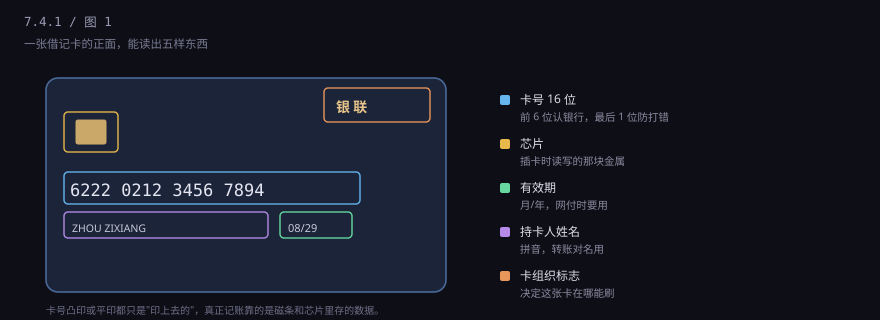
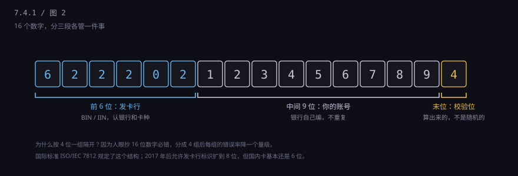
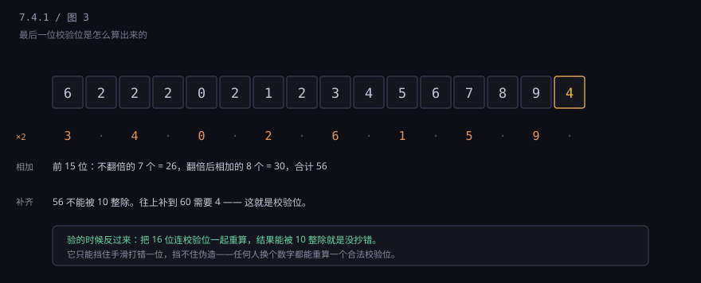
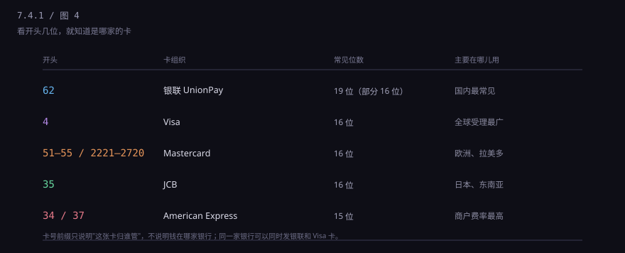

约 0.35 万字 · 4 张图 · 你输错一位，网页立刻知道；它没联网，它算出来的
先别急着看数字。把卡翻过来对着光，正面能读出五样东西，每一件都有用。

卡号：16 位（银联借记卡也有 19 位的），凸印或平印。
芯片：那块金色的小方块，插卡或贴一下时读它。
有效期：月/年，比如 08/29 表示 2029 年 8 月底到期。
姓名：拼音，转账时用来核对收款人。
卡组织标志：银联、Visa、Mastercard 这些，决定这张卡在哪儿能刷。
卡背面还有三样：磁条、签名栏、以及签名栏旁边那三位数（CVV2）。 那三位数下一节讲，它是网上支付最容易出事的地方。
先想一个更基础的问题：为什么要有卡？
因为银行不能让你每次买东西都报一遍账号、密码、身份证号。 它需要一个东西，能在一秒钟内说清"我是谁、我归哪家银行管"， 而且这个说法要能被机器读懂。卡就是这么一个凭证。
你可以把它想成储物柜的牌子：牌子本身不值钱， 值钱的是它对应柜子里的东西。牌子丢了可以补， 柜子里的东西一件不少——这就是卡和账户的关系， 后面第 6 小节会专门讲。
那卡号为什么是凸起来的？
这是上个时代留下的痕迹。在没有联网 POS 的年代， 收银员把卡放在一台手动压印机上，上面垫一张复写纸， 一滚，凸起的数字就印在小票上。小票三联，商户留一张、 你留一张、银行收一张，月底靠这些纸片对账。
现在没人压印了，凸字还留着，是因为全球还有大量老设备依赖它， 而且凸字在光线差的地方更容易摸出来。技术换代从来不是一夜之间， 总有一批旧东西拖着不走。
至于有效期，它不只是"过期作废"。 它是网上支付的一道验证：光知道卡号还不够，还得知道有效期， 而有效期只印在卡上。同时它也是风控参数——一张卡用五年、 十年还在用，本身就不正常，银行会主动换发。
16 位不是一坨，它分三段，每段管一件事。

前 6 位叫 BIN，也叫 IIN，中文是"发卡行标识"。 它是国际标准 ISO/IEC 7812 分配的，全世界不能重复。 就像身份证前 6 位是行政区划，卡号前 6 位告诉你： 这张卡是哪家机构发的、是借记卡还是信用卡、是银联还是 Visa。
比如 622202 这一段，62 开头代表银联，
后面的数字指向工商银行。你把卡号报给客服，
他先看前 6 位就知道该不该接你这通电话——不是我们的卡，转别的行。
这里有个细节：2017 年之后，标准允许 BIN 扩到 8 位， 因为 6 位不够分了（全球发卡机构太多）。 但国内大部分卡还是 6 位 BIN + 9 位账号 + 1 位校验的老结构。
顺便解释一个很多人好奇的事：为什么中国银联的卡都是 62 开头？
因为 62 这个号段是国际标准化组织分配给中国的。 早期中国的银行卡号段分散在 4、5 开头（那时候跟 Visa、万事达合作）， 银联成立后统一申请了 62，之后新发的卡基本都在这个号段里。 你在国内钱包里随便抽一张，十张有九张是 62 开头。
那 19 位 的借记卡怎么回事？还是同一套规则：
前面 6 位 BIN 不变，中间账号多给了 3 位，最后 1 位校验。
账号位加长的原因很土——一家大行的卡发得太多，9 位不够用了。
这也说明一件事：卡号的长度不是固定的，规则里的"可变部分"由发卡行自己定。 你写程序判断卡号时，不能假设"一定是 16 位"。
中间这 9 位是发卡行自己编的，只要保证自家范围内不重复就行。 它本质上是"账号"在卡这个载体上的写法——不是你的身份证号， 也不是按顺序发的，内部可能有分行号、卡种、批次这些信息夹在里面。
所以你会发现：同一个人在同一家银行办的几张卡，卡号差得很远。 因为它们不是"你的号 + 1"，是各自独立分配的。
重点来了。最后一位不是分配给你的，是算出来的。 这套算法叫 Luhn 算法，1960 年代由一个叫 Hans Luhn 的 IBM 工程师提出， 现在全世界的银行卡、信用卡都在用。

规则拆开就三步，用卡号 6222 0212 3456 7894 走一遍：
第一步，从右往左，隔一位把数字翻倍（校验位本身不动）。
翻倍后如果超过 9，就把两位相加——比如 9×2=18，变成 1+8=9。
第二步，把所有数字加起来。前 15 位算出来是 56。
第三步，往上补到 10 的整数倍。56 补到 60 需要 4，所以第 16 位是 4。
验证的时候反过来：把 16 位（含校验位）一起算，结果能被 10 整除就是对的。 你输错一位、或者把两位写反了，这个和几乎一定会变，页面立刻就能提示， 全程不需要联网。
但要注意它能挡什么、不能挡什么。 它能挡住手滑：抄错一位、少写一位、两位颠倒。 它挡不住伪造：任何人随便编 15 位数字，都能算出一个合法的第 16 位。 所以校验通过只说明"这个号长得像真的"，不说明"这个号存在"。
这也是为什么有些网站说"卡号无效"时特别快—— 它只是在本地跑了一遍加法，跟银行一毛钱关系都没有。
你有没有想过，为什么卡号印成 6222 0212 3456 7894，
四个一组，而不是连成一串？
因为人眼抄长数字必错。心理学上有个说法叫"工作记忆容量"， 人对超过 7 个单位的连续信息就开始丢。16 位连着看， 眼睛会串行；分成 4 组，每组 4 位，你的眼睛有落点，错误率能降一个量级。
手机号 3-4-4、身份证 6-8-4、银行卡 4-4-4-4， 背后的道理是同一个：格式不是为了好看，是为了少出错。
这一条很多人一辈子没搞清：卡号是卡号，账号是账号，两个东西。
你在银行开了一个户，银行给你一个账号（有的银行叫"客户号"或"账户序号"）。 然后你办卡，卡是挂在这个账户上的一把钥匙。 同一张卡可以挂两个账户（人民币 + 外币）， 同一个账户也可以挂好几张卡（补卡、副卡、换卡）。
所以卡丢了挂失、补一张新的，卡号变了， 你的钱一分没动——因为账户没变，只是换了一把钥匙。 别人给你转账，用账号或者手机号都能到， 因为他转的是账户，不是卡。
信用卡不一样。信用卡的卡号基本就等于账户标识，一卡一户， 所以信用卡挂失补卡，卡号通常会变，有些银行可以保留原卡号（要加钱）。
误解一：卡号被人知道了，钱就没了。 不是。国内网付还要有效期、CVV2、短信验证码， 光有卡号连门都进不去。真正危险的是"卡号 + 有效期 + CVV2"三样齐了， 或者你把验证码念给了别人。
误解二：卡号能算出来。 半对。能生成"格式合法"的号，但生成不出"真实存在"的号。 Luhn 只能保证长得像，银行系统一查，不存在的号直接拒。 这也是后面讲撞库时的一个关键：骗子手里大部分号是死的，所以他们要小额试。
误解三：卡号就是账号，记不住就是记性差。 不是。16 位随机数字，人本来就记不住，这是设计使然—— 它是给机器读的，不是给人背的。你只需要记住后四位， 用来核对"是不是我那张卡"就够了。
不能。国内网上支付至少要三样：卡号 + 有效期 + CVV2（背面那三位）， 再加一道手机验证码或者支付密码。
国外的老系统更松，很多网站只要卡号、有效期、CVV 就能扣款， 这三样东西全印在卡上——这就是为什么拍一张卡的正反面照片发出去， 等于把钱包交出去。下一节专门讲盗刷是怎么发生的。
那开头几位怎么认卡组织？看一眼就够：

这一节讲的是"这张卡是什么"。下一节讲"这张卡怎么被读"—— 磁条、芯片、闪付，三种方式的安全等级差得很远， 明白了这个，你就知道为什么银行一直劝你把磁条卡换掉。